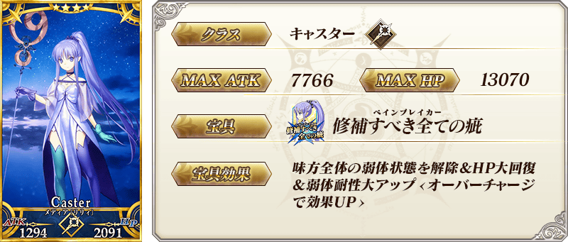

◆斯卡哈Pick Up召喚期間◆
期間：2015年12月9日(三) 15:00 ～ 12月16日(三) 12:59
以期間限定舉辦「斯卡哈Pick Up召喚」！
Servant「★5（SSR）斯卡哈」以期間限定登場！ 「★3（R）迪爾姆德・奧德利暗」、「★3（R）弗格斯・馬克・羅伊」新登場！ 還有「★4（SR）美狄亞〔Lily〕」也Pick Up！
※斯卡哈在Pick Up召喚期間結束後，不會追加到故事召喚。
並且，概念禮裝「★5（SSR）2030年の欠片」、「★4（SR）騎士の矜持」、「★3（R）魔猪」也是新登場！
期間限定Servant、新登場Servant、Pick Up Servant、期間限定概念禮裝的出現機率提升！
10次召喚★4(SR)以上1枚確定和★3(R)以上的Servant1位確定！
※★4(SR)以上確定包含Servant和概念禮裝。
以期間限定舉辦「斯卡哈Pick Up召喚」！
Servant「★5（SSR）斯卡哈」以期間限定登場！ 「★3（R）迪爾姆德・奧德利暗」、「★3（R）弗格斯・馬克・羅伊」新登場！ 還有「★4（SR）美狄亞〔Lily〕」也Pick Up！
※斯卡哈在Pick Up召喚期間結束後，不會追加到故事召喚。
並且，概念禮裝「★5（SSR）2030年の欠片」、「★4（SR）騎士の矜持」、「★3（R）魔猪」也是新登場！
期間限定Servant、新登場Servant、Pick Up Servant、期間限定概念禮裝的出現機率提升！
10次召喚★4(SR)以上1枚確定和★3(R)以上的Servant1位確定！
※★4(SR)以上確定包含Servant和概念禮裝。

Pick Up期間中在伽爾帝亞之門出現斯卡哈體驗任務！
※通過序章（炎上汙染都市 冬木）才會開放。
迎接「★5（SSR）斯卡哈」、「★3（R）迪爾姆德・奧德利暗」、「★3（R）弗格斯・馬克・羅伊」做為支援成員，挑戰期間限定的任務！
別錯過體驗各Servant技能和寶具的機會！
※通過序章（炎上汙染都市 冬木）才會開放。
迎接「★5（SSR）斯卡哈」、「★3（R）迪爾姆德・奧德利暗」、「★3（R）弗格斯・馬克・羅伊」做為支援成員，挑戰期間限定的任務！
別錯過體驗各Servant技能和寶具的機會！
◆任務通過報酬◆
槍の輝石
槍の魔石
槍の秘石
呼符
槍の魔石
槍の秘石
呼符



★★★★★SSR
スキル
2030年の欠片
ATK 0（最大：0） HP 750（最大：3000）スキル
對自身賦予每回合獲得Critical星星8個狀態

★★★★SR
スキル
騎士の矜持
ATK 200（最大：750） HP 300（最大：1125）スキル
自身的Critical威力提升40％＆防禦力下降20%

★★★R
スキル
魔猪
ATK 200（最大：1000） HP 0（最大：0）スキル
自身的Quick卡性能提升15％(3回合)